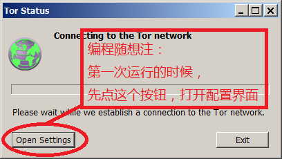
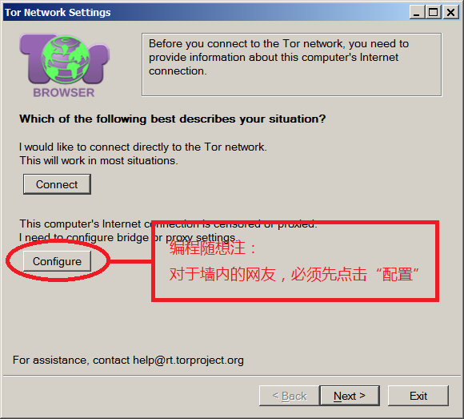
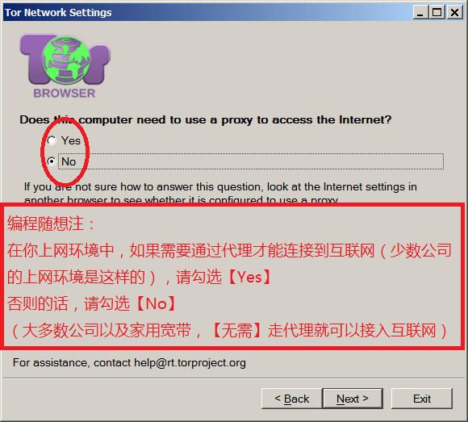
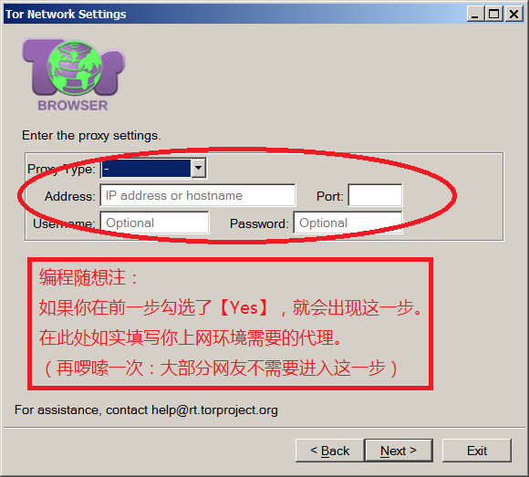
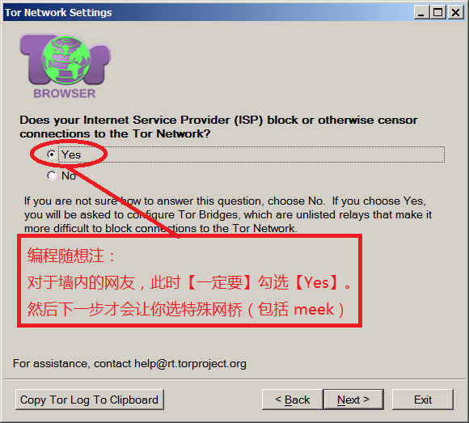
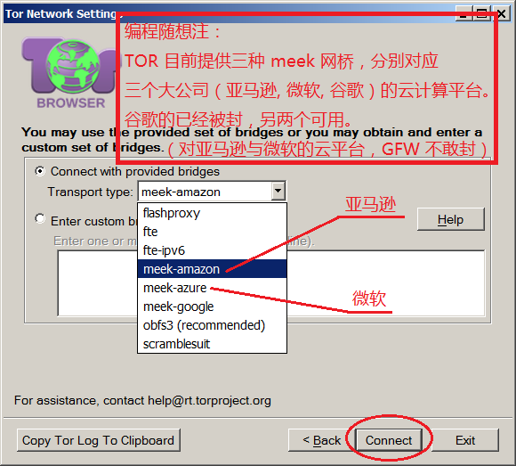
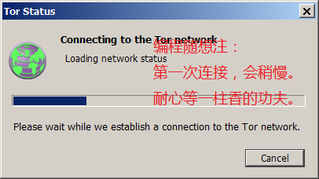
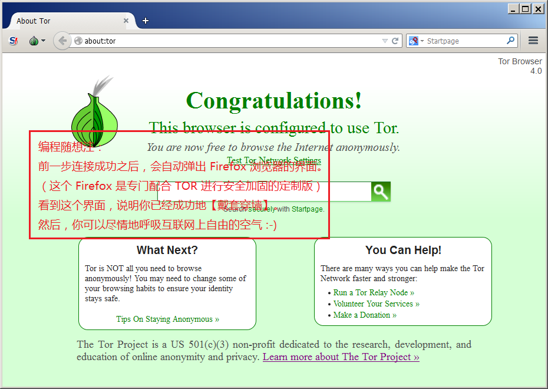
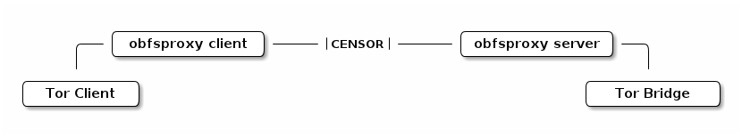
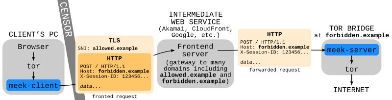

本文已经过时了。针对 TOR Browser 的新版本，俺另写了一篇教程：
“如何翻墙”系列：扫盲 TOR Browser 7.5——关于 meek 插件的配置、优化、原理
2天前（10月17日），TOR 官网发布了全新的 TOR Browser 4.0 版本。当天就有俺的读者试用，并反馈说 TOR 复活了。这两天俺也去尝试了一下，果不其然。于是发一篇博文，跟大伙儿分享一下心得，包括：安装、配置、优化和技术原理。
TOR 是洋文 （The Onion Router）的缩写，中文又称“洋葱网络/洋葱路由”。
它是一款非常老牌的翻墙工具；而且它不仅仅可以翻墙，还是一款很牛B 的隐匿性工具（有助于在你上网时，帮你隐匿自己的真实公网 IP）。
俺在一年前（2013）写过一篇《“如何翻墙”系列：关于 TOR 的常见问题解答》，建议没看过的同学建议先看完那篇，然后再来看本文。
大约在2010年的两会期间，GFW 开始全面屏蔽 TOR 在全球的节点（包括网桥）——也就是把这些节点都列入“IP 黑名单”。从那之后，天朝之内的 TOR 就很难独立联网了。
（顺带说一句：虽然 TOR 无法【独立】联网，但是可以利用双重代理的方式，借助其它翻墙工具联网，教程参见《如何隐藏你的踪迹，避免跨省追捕[5]：用多重代理隐匿公网IP》）
在本文开篇处俺提到：TOR Browser 刚刚发布了全新的 4.0 版本。该版本有一个重大的新特性是——内置了 meek 流量混淆插件。
依靠 meek 插件，可以把 TOR 流量伪装成访问云计算平台的流量。当你的数据流量到达云计算平台之后，会经过一系列中转（具体的技术原理，本文末尾有简介），最终转向你真正访问的网站。这么做的好处在于：
1. 由于传输流量经过伪装，GFW 比较难区分“伪装的TOR流量”和“真正访问云计算的普通流量”。
2. 由于 meek 依赖的这几个云计算平台都是大公司（亚马逊、微软）提供的，GFW 不太敢随便封杀。
1.
这几个大公司的云平台，有很多国内的商业公司也在用，GFW 不敢轻易封锁这几个云计算平台的“服务器 IP”。
2.
俺初步使用下来，感觉线路还是比较稳定。
3.
由于 TOR 本身就是多重代理（默认三重），所以当你用 TOR+meek 翻墙，你的“公网IP”的隐匿性会明显高于其它“单重代理”的工具（比如：VPN、自由门、无界）
1.
目前翻墙速度不够快。俺这两天稍微测试了一下，大约在 20KB 到 30KB 之间（字节率）。这个速度看视频肯定没戏，看网页还可以。
希望今后可以有明显的改善——比如 TOR 社区部署更多的 meek 网桥；或者对代码和架构进行优化。
（本文发出之后，有热心读者反馈说速度可以达到 100KB/s，俺估计不同的省份或者不同的 ISP，效果可能不同）
先扫盲一下最基本的使用：如何配置 TOR Browser，让它走 meek 类型的网桥。
首先，你要到 TOR 的官网去下载。下载页面在”这里“。
这个页面上提供了 Windows、Linux、Mac OS 三大平台的下载链接；并且也提供了不同语言（包括中文）的安装包——点击下载页面的“ Other Languages”就可以选语言。
安装过程很傻瓜化，没啥好说的。你就照着安装向导一步步往下走，既可。
“配置过程”是本节的重点。为了照顾技术菜鸟，俺特意制作了每一步的截图，图中配上醒目的解说。

（当你第一次启动 TOR Browser，会看到这个界面）



（如果勾选了 Proxy，会进入这一步）

（如果【不需要】勾选 Proxy，直接进入这一步）

（关键的配置在这一步）

（耐心等待）

（大功告成）
刚才那个章节介绍了“如何用 meek 网桥让 TOR 独立联网”。接下来讲一下如何搭配其它的上网软件（比如：“其它浏览器、IM 工具”等）。
顾名思义，TOR Browser 内置了 TOR。这个内置的 TOR 会在本机地址（
因此，如果某个网络软件跟 TOR Browser 安装在同一个操作系统中，并且该软件支持 SOCKS 代理，那么该软件就可以利用 TOR Browser 内置的 TOR，进行翻墙。
举例1：
假如你不喜欢 TOR Browser 内置的 Firefox，喜欢用自己的 Chrome。那么你可以设置 Chrome，让 Chrome 走 TOR 提供的 SOCKS 代理。
举例2：
假设你想让自己的 Skype 走 TOR 的线路，同样也可以修改 Skype 的代理设置，让 Skype 走 TOR 的线路联网。
既然本小节提到端口号，再次唠叨一下：
从
修改 TOR 的配置文件
在 TOR Browser 的安装目录下搜索
（唠叨一下：如果要跨机器共享 TOR 的 SOCKS 端口，别忘了修改防火墙的配置，允许
端口转发
除了上述方法，你还可以参考俺之前的博文《多台电脑如何共享翻墙通道》。此文中介绍了两种常见的“端口转发”方式。
端口转发的好处是：跟具体的翻墙软件无关——既可以用于 TOR，也可以用于其它的翻墙代理。
经过这两天的初步研究，俺发现：如果你想用 meek 插件，就【没办法】剥离内置的 Firefox。因为 TOR 的这个 meek 插件需要 Firefox 才能正常工作。
虽然无法剥离，但还是有希望进行一些优化滴。请看下一节。
本小节针对如下两种人：
1. 想用自己的浏览器，不喜欢 TOR Browser 内置的 Firefox
2. 只拿 TOR 来充当翻墙代理，完全不需要用到浏览器
当你按照前面的基本教程，把 TOR Browser 启动起来并利用 meek 这个流量混淆插件翻墙成功。这时候 TOR Browser 会在内存中运行如下几个进程（请看截图）。

截图中显示的是进程的父子关系（术语叫“进程树”）。Windows 内置的“任务管理器”只能显示“进程列表”，无法显示“进程树”。俺这里用的是：Process Explorer（该工具由微软官网提供，链接在“这里”）
只要你眼睛没瞎，自然会发现：在 TOR Browser 的进程树中，有两个 Firefox 进程。这是咋回事捏？俺来解释一下：
最上面的那个 Firefox 对应的就是你看到的 Firefox 浏览器界面。而下面那个 Firefox 是用来跟 meek 插件搭配的（俺猜测是用来进行网络流量转发）。这也就是为啥俺刚才说“Firefox 没法剥离”。因为 Firefox 参与了 meek 插件的工作。
现在，假设你不想用内置的 Firefox，想用别的浏览器，那么最上面的那个 Firefox 进程对你而言就是多余的（而且浪费了你的系统内存）。但是没有它，你又没法启动 TOR，咋办捏？
俺想了一个解决办法：不依赖【内置的】 Firefox，直接启动 TOR（以及 meek 插件）。操作步骤如下：
1. 先正常启动一次
你先根据俺前面介绍的教程，把 TOR Browser 正常启动一次，并配置好 meek 插件。
2. 制作一个启动脚本（bat 批处理文件）
首先，俺准备了一个 BAT 脚本（由于这个脚本很简单，只有一行，就不放到网盘上了）。这个脚本的内容如下：
友情提醒一下：上述内容总共只有一行，中间【不要】出现换行/回车。保存的时候，文件编码用 ANSI，【不要用】UTF8
3. 把上述脚本放置到 TOR Browser 的主目录下
假设你把 TOR Browser 安装到 XXX 目录，那么俺所说的“主目录”就是：XXX 目录下的 Browser 子目录
（放置批处理文件的目录一定不要搞错，否则运行不了）
4. 运行上述脚本
这步很简单——只需在资源管理器里面双击这个 bat 文件，既可。运行之后会弹出一个黑色的命令行窗口。
这时候，如果你手头有 Process Explorer，再去查看系统中运行的进程，就会看到如下（截图）：

从截图中可以看出，原先的两个 Firefox 如今只剩下一个啦（节约了不少内存）。
由于俺的读者里面，以 Windows 用户居多，所以刚才举了 Windows 的例子（bat 脚本）。如果你用的是其它操作系统（Linux 或 Mac OS X），可以参照俺的例子，依样画葫芦。
（如果你是技术菜鸟，本小节可以略过不看，以免浪费时间）
首先，TOR 网络内部（从“你本机”一直到“出口节点”）的传输是强加密的，别人无法偷窥你的真实网络流量。除非 TOR 软件本身出现严重安全漏洞 或者 你碰到的“出口节点”是蜜罐。
虽然别人无法偷窥你的真实上网内容，但是如果有人（比如：电信运营商）监控你的流量，可以判断出你在使用 TOR——（请注意：“判断流量类型”不等于“解密内容”）。
而“流量混淆”的作用就是：把 TOR 流量伪装成其它的上网流量，让监控者看不出你在用 TOR。
出于软件架构方面的考虑，“流量混淆”的功能不是做到 TOR 的核心软件中，而是通过插件的方式来提供。因为“混淆流量”的方式是多种多样的，用插件来扩展，就无需频繁改动核心模块的代码。
在 meek 之前，TOR 开源社区已经出过好几款流量混淆插件。俺就拿 obfsproxy 来举例——下面是 obfsproxy 的示意图。
 图中的“TOR client”和“obfsproxy client”在你本机，他们要正常工具，就需要先连接到“obfsproxy server”。
虽然 GFW 无法区分被 obfsproxy 混淆过的流量，但是因为全球的 obfsproxy server 数量是有限的，GFW 可以把所有的“obfsproxy server”都加入“IP 黑名单”。如此一来，就足以让 obfsproxy 失效。
meek 插件跟 obfsproxy 插件类似，也是 client/server 架构。meek client 也是跟 TOR client 一起运行在你本机。下面这张是 meek 的示意图（摘自 TOR 官网的文档）：

从图中可以看出，meek 跟 obfsproxy 的主要差异在于：meek server 并不是直接暴露出来的。换句话说，你本机【不需要】直接连接 meek server，而是直接连接云计算平台的服务器（图中的“Frontend Server”）。
如此一来，即便 GFW 知道 meek server 的 IP，并且封杀这些 IP，也【没有】意义。而云计算平台的 IP，GFW 又不敢封杀。这就是 meek 插件可以突破 GFW 的关键所在。
如果你是 IT 技术人员，想更多地了解 meek 的机制，请看 TOR 官网的相关文档（链接在“这里”，是洋文）
在《“如何翻墙”系列：关于 TOR 的常见问题解答》一文中，俺曾经介绍了——如何排除某些国家的 TOR 节点（也就是说，禁止使用这些国家的 TOR 节点作为中继）。
本文发布之后，有读者反馈说，一旦在
解决方法是：用了 meek 插件的 TOR，就不要在
但是这样一来，某些比较谨慎的同学会担心误入蜜罐节点。俺想了个应对措施——拿配置了 meek 的 TOR 作另一个 TOR 的前置代理。这话有点绕口，配置如下：
1. 安装两个 TOR，分别成为 A 和 B（为了避免冲突，可以放到两个虚拟机中）
2. A 配置了 meek，B 不配置 meek（为了用 meek，A 必须是 TOR Browser 软件包；至于 B 可以是 TOR Browser Bundle 软件包，也可以是 Vidalia Bridge Bundle 软件包）
3. 在 B 的
4. 把 A 作为 B 的前置代理（也就是说，B 走 A 的 SOCKS 代理）
5. 你的浏览器走 B 的 SOCKS 代理
（其实这个配置跟传统的“基于 TOR 的双重代理”，本质上是一样的。差别在于——“前置代理”也是 TOR）
俺博客上，和本文相关的帖子（需翻墙）：
如何翻墙（传说中的翻墙入门教程，不定期更新）
“如何翻墙”系列：扫盲 TOR Browser 7.5——关于 meek 插件的配置、优化、原理
关于 TOR 的常见问题解答
多台电脑如何共享翻墙通道
扫盲 VPN Gate——分布式的 VPN 服务器
新版本无界——赛风3失效后的另一个选择
双管齐下的赛风3
自由門——TOR 被封之后的另一个选择
扫盲 VPN 翻墙——以 Hotspot Shield 为例
简单扫盲 I2P 的使用
如何隐藏你的踪迹，避免跨省追捕（系列）
“如何翻墙”系列：扫盲 TOR Browser 7.5——关于 meek 插件的配置、优化、原理
2天前（10月17日），TOR 官网发布了全新的 TOR Browser 4.0 版本。当天就有俺的读者试用，并反馈说 TOR 复活了。这两天俺也去尝试了一下，果不其然。于是发一篇博文，跟大伙儿分享一下心得，包括：安装、配置、优化和技术原理。
★TOR 是啥？
TOR 是洋文 （The Onion Router）的缩写，中文又称“洋葱网络/洋葱路由”。
它是一款非常老牌的翻墙工具；而且它不仅仅可以翻墙，还是一款很牛B 的隐匿性工具（有助于在你上网时，帮你隐匿自己的真实公网 IP）。
俺在一年前（2013）写过一篇《“如何翻墙”系列：关于 TOR 的常见问题解答》，建议没看过的同学建议先看完那篇，然后再来看本文。
★为啥 TOR 无法在天朝内【独立联网】？
大约在2010年的两会期间，GFW 开始全面屏蔽 TOR 在全球的节点（包括网桥）——也就是把这些节点都列入“IP 黑名单”。从那之后，天朝之内的 TOR 就很难独立联网了。
（顺带说一句：虽然 TOR 无法【独立】联网，但是可以利用双重代理的方式，借助其它翻墙工具联网，教程参见《如何隐藏你的踪迹，避免跨省追捕[5]：用多重代理隐匿公网IP》）
★为啥 TOR 又复活了？
在本文开篇处俺提到：TOR Browser 刚刚发布了全新的 4.0 版本。该版本有一个重大的新特性是——内置了 meek 流量混淆插件。
依靠 meek 插件，可以把 TOR 流量伪装成访问云计算平台的流量。当你的数据流量到达云计算平台之后，会经过一系列中转（具体的技术原理，本文末尾有简介），最终转向你真正访问的网站。这么做的好处在于：
1. 由于传输流量经过伪装，GFW 比较难区分“伪装的TOR流量”和“真正访问云计算的普通流量”。
2. 由于 meek 依赖的这几个云计算平台都是大公司（亚马逊、微软）提供的，GFW 不太敢随便封杀。
★用 TOR + MEEK 翻墙，有啥优缺点？
◇优点
1.
这几个大公司的云平台，有很多国内的商业公司也在用，GFW 不敢轻易封锁这几个云计算平台的“服务器 IP”。
2.
俺初步使用下来，感觉线路还是比较稳定。
3.
由于 TOR 本身就是多重代理（默认三重），所以当你用 TOR+meek 翻墙，你的“公网IP”的隐匿性会明显高于其它“单重代理”的工具（比如：VPN、自由门、无界）
◇缺点
1.
目前翻墙速度不够快。俺这两天稍微测试了一下，大约在 20KB 到 30KB 之间（字节率）。这个速度看视频肯定没戏，看网页还可以。
希望今后可以有明显的改善——比如 TOR 社区部署更多的 meek 网桥；或者对代码和架构进行优化。
（本文发出之后，有热心读者反馈说速度可以达到 100KB/s，俺估计不同的省份或者不同的 ISP，效果可能不同）
★扫盲基本使用教程
先扫盲一下最基本的使用：如何配置 TOR Browser，让它走 meek 类型的网桥。
◇下载
首先，你要到 TOR 的官网去下载。下载页面在”这里“。
这个页面上提供了 Windows、Linux、Mac OS 三大平台的下载链接；并且也提供了不同语言（包括中文）的安装包——点击下载页面的“ Other Languages”就可以选语言。
◇安装
安装过程很傻瓜化，没啥好说的。你就照着安装向导一步步往下走，既可。
◇配置
“配置过程”是本节的重点。为了照顾技术菜鸟，俺特意制作了每一步的截图，图中配上醒目的解说。
（当你第一次启动 TOR Browser，会看到这个界面）
（如果勾选了 Proxy，会进入这一步）
（如果【不需要】勾选 Proxy，直接进入这一步）
（关键的配置在这一步）
（耐心等待）
（大功告成）
★如何搭配其它网络软件？
刚才那个章节介绍了“如何用 meek 网桥让 TOR 独立联网”。接下来讲一下如何搭配其它的上网软件（比如：“其它浏览器、IM 工具”等）。
◇【本机软件】利用 TOR Browser 联网
顾名思义，TOR Browser 内置了 TOR。这个内置的 TOR 会在本机地址（
127.0.0.1）开启一个 SOCKS 端口，端口号是 9150因此，如果某个网络软件跟 TOR Browser 安装在同一个操作系统中，并且该软件支持 SOCKS 代理，那么该软件就可以利用 TOR Browser 内置的 TOR，进行翻墙。
举例1：
假如你不喜欢 TOR Browser 内置的 Firefox，喜欢用自己的 Chrome。那么你可以设置 Chrome，让 Chrome 走 TOR 提供的 SOCKS 代理。
举例2：
假设你想让自己的 Skype 走 TOR 的线路，同样也可以修改 Skype 的代理设置，让 Skype 走 TOR 的线路联网。
既然本小节提到端口号，再次唠叨一下：
从
2.3.25 版本开始，Tor Browser Bundle 软件包的 SOCKS 监听端口改为 9150，而 TOR 的其它软件包（比如 Vidalia Bridge Bundle）继续使用 9050 作为 SOCKS 代理的端口号。很多用 TOR 翻墙的同学，一直把这两个端口号搞混了。◇【跨机器】共享 TOR Browser 的翻墙通道
修改 TOR 的配置文件
在 TOR Browser 的安装目录下搜索
torrc 文件。找到后用记事本（notepad）打开，在该文件末尾新增一行，内容如下。SocksListenAddress 0.0.0.0:9150修改完记得保存，然后记得重启 TOR Browser。之后，TOR 的监听端口就会绑定到
0.0.0.0 这个地址——意思就是说，任何地址（任何机器）都可以连接到 TOR 的监听端口。（唠叨一下：如果要跨机器共享 TOR 的 SOCKS 端口，别忘了修改防火墙的配置，允许
9150 端口的 TCP 连入）端口转发
除了上述方法，你还可以参考俺之前的博文《多台电脑如何共享翻墙通道》。此文中介绍了两种常见的“端口转发”方式。
端口转发的好处是：跟具体的翻墙软件无关——既可以用于 TOR，也可以用于其它的翻墙代理。
★如何剥离“内置的 Firefox”？
经过这两天的初步研究，俺发现：如果你想用 meek 插件，就【没办法】剥离内置的 Firefox。因为 TOR 的这个 meek 插件需要 Firefox 才能正常工作。
虽然无法剥离，但还是有希望进行一些优化滴。请看下一节。
★如何优化“内置的 Firefox”？
本小节针对如下两种人：
1. 想用自己的浏览器，不喜欢 TOR Browser 内置的 Firefox
2. 只拿 TOR 来充当翻墙代理，完全不需要用到浏览器
◇为啥需要优化？
当你按照前面的基本教程，把 TOR Browser 启动起来并利用 meek 这个流量混淆插件翻墙成功。这时候 TOR Browser 会在内存中运行如下几个进程（请看截图）。
截图中显示的是进程的父子关系（术语叫“进程树”）。Windows 内置的“任务管理器”只能显示“进程列表”，无法显示“进程树”。俺这里用的是：Process Explorer（该工具由微软官网提供，链接在“这里”）
只要你眼睛没瞎，自然会发现：在 TOR Browser 的进程树中，有两个 Firefox 进程。这是咋回事捏？俺来解释一下：
最上面的那个 Firefox 对应的就是你看到的 Firefox 浏览器界面。而下面那个 Firefox 是用来跟 meek 插件搭配的（俺猜测是用来进行网络流量转发）。这也就是为啥俺刚才说“Firefox 没法剥离”。因为 Firefox 参与了 meek 插件的工作。
现在，假设你不想用内置的 Firefox，想用别的浏览器，那么最上面的那个 Firefox 进程对你而言就是多余的（而且浪费了你的系统内存）。但是没有它，你又没法启动 TOR，咋办捏？
◇如何优化？
俺想了一个解决办法：不依赖【内置的】 Firefox，直接启动 TOR（以及 meek 插件）。操作步骤如下：
1. 先正常启动一次
你先根据俺前面介绍的教程，把 TOR Browser 正常启动一次，并配置好 meek 插件。
2. 制作一个启动脚本（bat 批处理文件）
首先，俺准备了一个 BAT 脚本（由于这个脚本很简单，只有一行，就不放到网盘上了）。这个脚本的内容如下：
.\TorBrowser\Tor\tor.exe --defaults-torrc .\TorBrowser\Data\Tor\torrc-defaults -f .\TorBrowser\Data\Tor\torrc DataDirectory .\TorBrowser\Data\Tor GeoIPFile .\TorBrowser\Data\Tor\geoip GeoIPv6File .\TorBrowser\Data\Tor\geoip6把上述内容复制下来，用记事本（notepad）保存成某个批处理文件（记得扩展名要用
.bat ，比如说就叫 run.bat）。友情提醒一下：上述内容总共只有一行，中间【不要】出现换行/回车。保存的时候，文件编码用 ANSI，【不要用】UTF8
3. 把上述脚本放置到 TOR Browser 的主目录下
假设你把 TOR Browser 安装到 XXX 目录，那么俺所说的“主目录”就是：XXX 目录下的 Browser 子目录
（放置批处理文件的目录一定不要搞错，否则运行不了）
4. 运行上述脚本
这步很简单——只需在资源管理器里面双击这个 bat 文件，既可。运行之后会弹出一个黑色的命令行窗口。
这时候，如果你手头有 Process Explorer，再去查看系统中运行的进程，就会看到如下（截图）：
从截图中可以看出，原先的两个 Firefox 如今只剩下一个啦（节约了不少内存）。
◇其它平台
由于俺的读者里面，以 Windows 用户居多，所以刚才举了 Windows 的例子（bat 脚本）。如果你用的是其它操作系统（Linux 或 Mac OS X），可以参照俺的例子，依样画葫芦。
★简介 meek 网桥的技术原理
（如果你是技术菜鸟，本小节可以略过不看，以免浪费时间）
◇啥是“流量混淆”？
首先，TOR 网络内部（从“你本机”一直到“出口节点”）的传输是强加密的，别人无法偷窥你的真实网络流量。除非 TOR 软件本身出现严重安全漏洞 或者 你碰到的“出口节点”是蜜罐。
虽然别人无法偷窥你的真实上网内容，但是如果有人（比如：电信运营商）监控你的流量，可以判断出你在使用 TOR——（请注意：“判断流量类型”不等于“解密内容”）。
而“流量混淆”的作用就是：把 TOR 流量伪装成其它的上网流量，让监控者看不出你在用 TOR。
出于软件架构方面的考虑，“流量混淆”的功能不是做到 TOR 的核心软件中，而是通过插件的方式来提供。因为“混淆流量”的方式是多种多样的，用插件来扩展，就无需频繁改动核心模块的代码。
◇普通的“流量混淆插件”，有啥缺点？
在 meek 之前，TOR 开源社区已经出过好几款流量混淆插件。俺就拿 obfsproxy 来举例——下面是 obfsproxy 的示意图。
虽然 GFW 无法区分被 obfsproxy 混淆过的流量，但是因为全球的 obfsproxy server 数量是有限的，GFW 可以把所有的“obfsproxy server”都加入“IP 黑名单”。如此一来，就足以让 obfsproxy 失效。
◇“meek 插件”有啥优点？
meek 插件跟 obfsproxy 插件类似，也是 client/server 架构。meek client 也是跟 TOR client 一起运行在你本机。下面这张是 meek 的示意图（摘自 TOR 官网的文档）：
从图中可以看出，meek 跟 obfsproxy 的主要差异在于：meek server 并不是直接暴露出来的。换句话说，你本机【不需要】直接连接 meek server，而是直接连接云计算平台的服务器（图中的“Frontend Server”）。
如此一来，即便 GFW 知道 meek server 的 IP，并且封杀这些 IP，也【没有】意义。而云计算平台的 IP，GFW 又不敢封杀。这就是 meek 插件可以突破 GFW 的关键所在。
如果你是 IT 技术人员，想更多地了解 meek 的机制，请看 TOR 官网的相关文档（链接在“这里”，是洋文）
★疑难解答
◇按国别排除 TOR 节点之后，meek 无法正常连接
在《“如何翻墙”系列：关于 TOR 的常见问题解答》一文中，俺曾经介绍了——如何排除某些国家的 TOR 节点（也就是说，禁止使用这些国家的 TOR 节点作为中继）。
本文发布之后，有读者反馈说，一旦在
torrc 中禁用了某些国家的节点，会导致 meek 无法联网。解决方法是：用了 meek 插件的 TOR，就不要在
torrc 中使用 ExcludeNodes 语法来排除节点。但是这样一来，某些比较谨慎的同学会担心误入蜜罐节点。俺想了个应对措施——拿配置了 meek 的 TOR 作另一个 TOR 的前置代理。这话有点绕口，配置如下：
1. 安装两个 TOR，分别成为 A 和 B（为了避免冲突，可以放到两个虚拟机中）
2. A 配置了 meek，B 不配置 meek（为了用 meek，A 必须是 TOR Browser 软件包；至于 B 可以是 TOR Browser Bundle 软件包，也可以是 Vidalia Bridge Bundle 软件包）
3. 在 B 的
torrc 中禁用流氓国家的节点4. 把 A 作为 B 的前置代理（也就是说，B 走 A 的 SOCKS 代理）
5. 你的浏览器走 B 的 SOCKS 代理
（其实这个配置跟传统的“基于 TOR 的双重代理”，本质上是一样的。差别在于——“前置代理”也是 TOR）
俺博客上，和本文相关的帖子（需翻墙）：
如何翻墙（传说中的翻墙入门教程，不定期更新）
“如何翻墙”系列：扫盲 TOR Browser 7.5——关于 meek 插件的配置、优化、原理
关于 TOR 的常见问题解答
多台电脑如何共享翻墙通道
扫盲 VPN Gate——分布式的 VPN 服务器
新版本无界——赛风3失效后的另一个选择
双管齐下的赛风3
自由門——TOR 被封之后的另一个选择
扫盲 VPN 翻墙——以 Hotspot Shield 为例
简单扫盲 I2P 的使用
如何隐藏你的踪迹，避免跨省追捕（系列）
版权声明
本博客所有的原创文章，作者皆保留版权。转载必须包含本声明，保持本文完整，并以超链接形式注明作者编程随想和本文原始地址：
https://program-think.blogspot.com/2014/10/gfw-tor-meek.html
本博客所有的原创文章，作者皆保留版权。转载必须包含本声明，保持本文完整，并以超链接形式注明作者编程随想和本文原始地址：
https://program-think.blogspot.com/2014/10/gfw-tor-meek.html